De-sensitivity of the closed loop system is,
Substitute for , 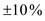 for 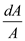.
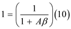
Solve for .
.
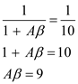
Thus, 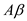 is 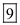.
De-sensitivity of the closed loop system is,
Substitute for , 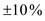 for 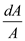.
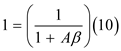
Solve for.
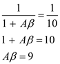
Thus, 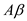 is 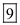.
For  change in closed loop gain
change in closed loop gain leads to 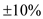 change in open loop gain
leads to 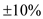 change in open loop gain  .
.
When closed loop is 25 leads to open loop gain
is 25 leads to open loop gain  is 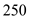.
is 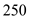.
Obtain the lowest gain.
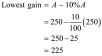
Therefore lowest gain is 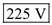.
Find feedback gain .
.
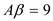
Solve for  .
.
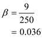
Therefore feedback gain 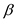is 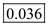.